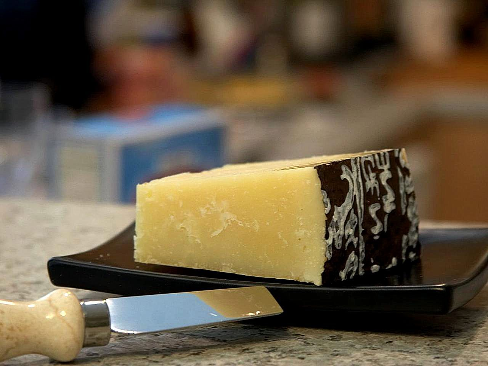
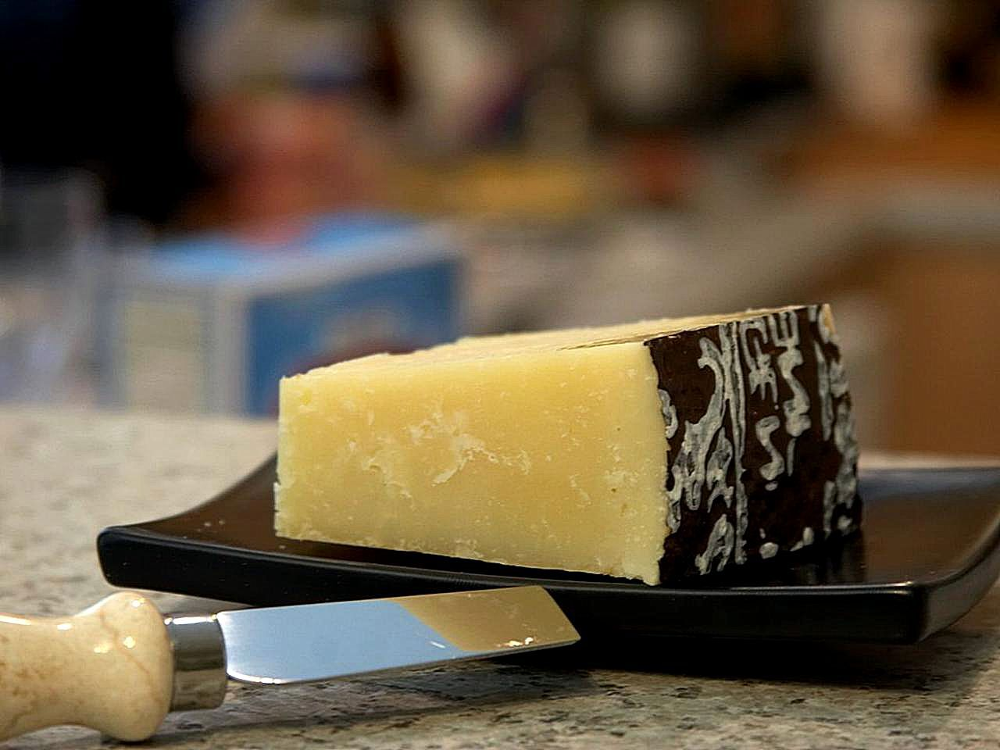
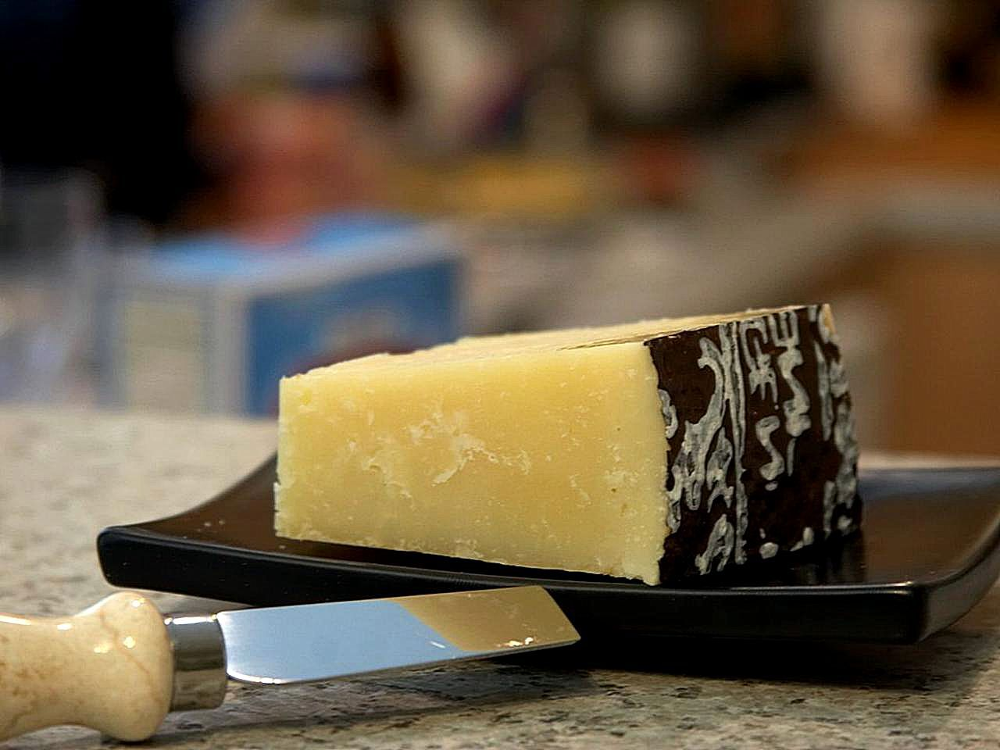

Benvenuti nel bolg di Fabien Leanza, cuoco provetto
Venite con me in questa fantastica avventura per scoprire ogni giorno nuove e gustose ricette!
La cucina è un'arte, e ogni piatto racconta una storia. Oggi prepareremo insieme una buonissima pasta alla Carbonara!

La pasta alla catbonara è un piatto tipico della tradizione italiana, in particolare di quella romana, che da sempre è argomento di grandi dibattiti.
Oggi vedremo la versione che ho appreso da un grande maestro dell'arte culinaria: mia nonna, e lo faremo in pochi semplici passaggi:

Per ulteriori informazioni, visita il mio sito web.
Copyright © 2025 Fabien Leanza